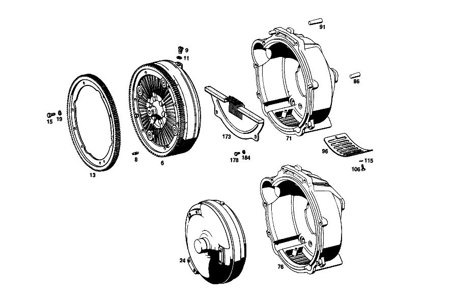

| № | Артикул | Название | Кол. | Примечание | Ограничение |
|---|---|---|---|---|---|
| 6 | A 112 250 05 02 | ГИДР.СЦЕПЛЕНИЕ | 1 | Автоматическая коробка переключения передач | |
| 8 | A 112 990 00 79 | - БОЛТ | 1 | Автоматическая коробка переключения передач | |
| 9 | A 180 997 05 30 | - Резьбовая пробка | 1 | ЗАПРАВКА МАСЛА И СЛИВ МАСЛА Автоматическая коробка переключения передач | |
| 11 | N 007603 012104 | - Уплотнительное кольцо | 1 | ЗАПРАВКА МАСЛА И СЛИВ МАСЛА Автоматическая коробка переключения передач | |
| 13 | A 189 032 00 05 | - ЗУБЧАТЫЙ ВЕНЕЦ | 1 | Автоматическая коробка переключения передач | |
| 15 | N 000933 008131 | - Винт | - | Автоматическая коробка переключения передач | |
| 15 | N 304017 008016 | - Винт с 6-гранной головкой | 2 | M8X16 Автоматическая коробка переключения передач | |
| 19 | N 000127 008203 | - Пружинное кольцо | 2 | Автоматическая коробка переключения передач | |
| 71 | A 112 250 21 05 | КОРПУС | 1 | Автоматическая коробка переключения передач [402] БОЛЬШЕ НЕ ПОСТАВЛЯЕТСЯ | |
| 86 | A 112 997 00 12 | - ШТИФТ | 1 | 12.2 MM Автоматическая коробка переключения передач | |
| 91 | A 112 997 01 12 | - ШТИФТ | 1 | 12.2 MM Автоматическая коробка переключения передач | |
| 96 | A 112 257 05 90 | - КОЖУХ | 1 | AIR OUT LET Автоматическая коробка переключения передач [001] 016 UP TO CHASSIS 001858 EXCEPT FOR, SEE FOOTNOTE 14 [014] 001473, 001548, 001702, 001722, 001786, 001793, 001797, 001801, 001804, 001853- 001857. | |
| 106 | N 000933 006102 | - Винт | - | Автоматическая коробка переключения передач | |
| 106 | N 304017 006016 | - Винт с 6-гранной головкой | 2 | M6X16 Автоматическая коробка переключения передач [001] 016 UP TO CHASSIS 001858 EXCEPT FOR, SEE FOOTNOTE 14 [014] 001473, 001548, 001702, 001722, 001786, 001793, 001797, 001801, 001804, 001853- 001857. | |
| 115 | N 000137 006204 | - Пружинная шайба | 2 | Автоматическая коробка переключения передач [001] 016 UP TO CHASSIS 001858 EXCEPT FOR, SEE FOOTNOTE 14 [014] 001473, 001548, 001702, 001722, 001786, 001793, 001797, 001801, 001804, 001853- 001857. | |
| 173 | A 112 250 01 56 | ЗАЩИТНАЯ ПАНЕЛЬ | 1 | Автоматическая коробка переключения передач | |
| 178 | N 000933 006103 | Винт | - | Автоматическая коробка переключения передач | |
| 178 | N 304017 006018 | Винт с 6-гранной головкой | 2 | M6X12 Автоматическая коробка переключения передач | |
| 184 | N 000137 006204 | Пружинная шайба | 2 | Автоматическая коробка переключения передач | |
| 191 | A 112 257 04 90 | Щиток | 1 | ||
| 201 | N 000137 004202 | Пружинная шайба | 2 | ||
| 207 | A 189 250 01 04 | Нажимная пластина | 1 | Коробка передач | |
| 216 | A 000 252 17 06 | - ШАЙБА УПОРНАЯ | 1 | Коробка передач [417] БОЛЬШЕ НЕ ПОСТАВЛЯЕТСЯ, ЗАКАЗЫВАТЬ КОМПЛЕКТ ПОСТАВКИ | |
| 219 | A 000 252 00 16 | - ПОДДЕРЖИВАЮЩИЙ МОСТ | 3 | Коробка передач | |
| 225 | A 000 252 00 18 | - Вал | 57 | Коробка передач [417] БОЛЬШЕ НЕ ПОСТАВЛЯЕТСЯ, ЗАКАЗЫВАТЬ КОМПЛЕКТ ПОСТАВКИ | |
| 229 | A 000 252 08 13 | - ВОЗВРАТН. РЫЧАГ | 3 | Коробка передач | |
| 233 | A 000 252 02 16 | - Ось | 3 | Коробка передач | |
| 238 | A 000 252 02 14 | - КРОНШТЕЙН | 3 | Коробка передач [417] БОЛЬШЕ НЕ ПОСТАВЛЯЕТСЯ, ЗАКАЗЫВАТЬ КОМПЛЕКТ ПОСТАВКИ | |
| 243 | A 000 252 00 17 | - РОЛИК | 3 | Коробка передач [402] БОЛЬШЕ НЕ ПОСТАВЛЯЕТСЯ | |
| 247 | A 000 252 02 71 | - болт | 3 | Коробка передач | |
| 253 | A 000 252 00 73 | - ПРЕДОХРАНИТЕЛЬ | 3 | Коробка передач | |
| 258 | A 000 252 03 72 | - гайка | 3 | Коробка передач [402] БОЛЬШЕ НЕ ПОСТАВЛЯЕТСЯ | |
| 263 | N 000933 008130 | - Винт | - | Коробка передач | |
| 263 | N 304017 008039 | - Винт с 6-гранной головкой | 3 | Коробка передач | |
| 269 | N 000127 008203 | - Пружинное кольцо | 3 | Коробка передач | |
| 271 | A 000 252 03 19 | - ПЛАСТИНЧАТАЯ ПРУЖИНА | 3 | Коробка передач [402] БОЛЬШЕ НЕ ПОСТАВЛЯЕТСЯ | |
| 276 | A 000 252 09 75 | - ЗАКЛЕПКА | 6 | Коробка передач [402] БОЛЬШЕ НЕ ПОСТАВЛЯЕТСЯ | |
| 281 | A 000 252 05 73 | - предохранитель | 3 | Коробка передач [402] БОЛЬШЕ НЕ ПОСТАВЛЯЕТСЯ | |
| 287 | N 000933 008130 | - Винт | - | Коробка передач | |
| 287 | N 304017 008039 | - Винт с 6-гранной головкой | 6 | Коробка передач | |
| 291 | N 000127 008203 | - Пружинное кольцо | 6 | Коробка передач | |
| 296 | A 000 252 23 20 | - ПРУЖИНА НАЖИМНАЯ | 9 | Коробка передач [402] БОЛЬШЕ НЕ ПОСТАВЛЯЕТСЯ | |
| 300 | A 000 252 00 24 | - ШАЙБА ИЗОЛЯЦИОННАЯ | 1 | Коробка передач [417] БОЛЬШЕ НЕ ПОСТАВЛЯЕТСЯ, ЗАКАЗЫВАТЬ КОМПЛЕКТ ПОСТАВКИ | |
| 304 | A 004 250 17 03 | ДИСК СЦЕПЛЕНИЯ | - | Коробка передач | |
| 304 | A 010 250 26 03 | Ведомый диск сцепления | 1 | Коробка передач [697] ДЕТАЛЬ ПОСТАВЛЯЕТСЯ ТОЛЬКО/ИЛИ ТАКЖЕ КАК ЗАП.ЧАСТЬ | |
| 308 | A 000 252 46 10 | - НАКЛАДКА СЦЕПЛ. ФРИКЦ. | 1 | Коробка передач | |
| 311 | A 000 252 16 75 | - ЗАКЛЕПКА | 24 | Коробка передач [402] БОЛЬШЕ НЕ ПОСТАВЛЯЕТСЯ | |
| 326 | N 000933 008154 | Винт | - | Коробка передач | |
| 326 | N 304017 008021 | Винт с 6-гранной головкой | 4 | СЦЕПЛЕНИЕ К МАХОВИКУ; M8X20 Коробка передач | |
| 331 | N 000137 008204 | Пружинная шайба | - | Коробка передач | |
| 331 | N 000137 008212 | Пружинная шайба | 4 | СЦЕПЛЕНИЕ К МАХОВИКУ Коробка передач | |
| 336 | A 186 252 01 71 | болт | 2 | СЦЕПЛЕНИЕ К МАХОВИКУ Коробка передач | |
| 341 | A 112 250 18 05 | КОРПУС | 1 | Коробка передач | |
| 353 | A 120 254 00 97 | Манжета | 1 | Коробка передач [001] 016 UP TO CHASSIS 001858 EXCEPT FOR, SEE FOOTNOTE 14 [014] 001473, 001548, 001702, 001722, 001786, 001793, 001797, 001801, 001804, 001853- 001857. | |
| 357 | A 120 254 00 58 | Кронштейн уплотнителя | 1 | Коробка передач [001] 016 UP TO CHASSIS 001858 EXCEPT FOR, SEE FOOTNOTE 14 [014] 001473, 001548, 001702, 001722, 001786, 001793, 001797, 001801, 001804, 001853- 001857. | |
| 363 | N 000933 006103 | Винт | - | Коробка передач | |
| 363 | N 304017 006018 | Винт с 6-гранной головкой | 4 | M6X12 Коробка передач [001] 016 UP TO CHASSIS 001858 EXCEPT FOR, SEE FOOTNOTE 14 [014] 001473, 001548, 001702, 001722, 001786, 001793, 001797, 001801, 001804, 001853- 001857. | |
| 367 | A 094 990 68 10 | Пружинное кольцо | 4 | Коробка передач [001] 016 UP TO CHASSIS 001858 EXCEPT FOR, SEE FOOTNOTE 14 [014] 001473, 001548, 001702, 001722, 001786, 001793, 001797, 001801, 001804, 001853- 001857. | |
| 371 | A 112 250 08 56 | ЗАЩИТНАЯ ПАНЕЛЬ | 1 | Коробка передач | |
| 374 | A 112 251 05 80 | - ПРОКЛАДКА УПЛОТНИТЕЛЬНАЯ | 1 | Коробка передач | |
| 378 | A 112 251 06 80 | - ПРОКЛАДКА УПЛОТНИТЕЛЬНАЯ | 1 | Коробка передач | |
| 394 | A 112 250 01 15 | Выжимной подшипник | 1 | Коробка передач | |
| 398 | A 000 981 48 25 | - ШАРИКОПОДШИПНИК | 1 | Коробка передач | |
| 408 | A 186 993 63 01 | ПРУЖИНА | 1 | Коробка передач | |
| 412 | A 186 254 05 90 | Тарелка пружины | 1 | Коробка передач | |
| 416 | A 186 994 13 34 | СТОПОРН. КОЛЬЦО | 1 | Коробка передач | |
| 420 | A 112 293 02 11 | ВИЛКА ВЫЖИМНАЯ | 1 | Коробка передач [001] 016 UP TO CHASSIS 001858 EXCEPT FOR, SEE FOOTNOTE 14 [014] 001473, 001548, 001702, 001722, 001786, 001793, 001797, 001801, 001804, 001853- 001857. | |
| 428 | N 071805 016300 | Пруж. стопорное кольцо | 1 | Коробка передач [001] 016 UP TO CHASSIS 001858 EXCEPT FOR, SEE FOOTNOTE 14 [014] 001473, 001548, 001702, 001722, 001786, 001793, 001797, 001801, 001804, 001853- 001857. | |
| 435 | A 000 295 18 07 | РАБОЧИЙ ЦИЛИНДР | 1 | Коробка передач | |
| 439 | A 000 295 03 74 | - Палец | 1 | Коробка передач | |
| 443 | A 000 295 11 83 | - МАНЖЕТА | 1 | Коробка передач | |
| 448 | A 000 295 01 20 | - КЛАПАН | 1 | Коробка передач | |
| 452 | A 000 421 71 87 | - КОЛПАЧОК | - | Коробка передач | |
| 452 | A 000 421 08 87 | - Защитный колпачок | 1 | Коробка передач | |
| 486 | A 111 295 07 33 | Нажимная штанга | 1 | Коробка передач | |
| 491 | N 000439 008211 | Гайка | - | Коробка передач | |
| 491 | N 304035 008001 | Шестигранная гайка | 1 | M8 Коробка передач | |
| 495 | A 111 993 11 10 | пружина | 1 | Коробка передач | |
| 499 | N 900055 040200 | Стопорное кольцо | 1 | Коробка передач | |
| A 112 997 03 12 | - ШТИФТ | 1 | РЕМОНТ. ИСПОЛНЕНИЕ 12.4 MM Автоматическая коробка переключения передач | ||
| A 112 997 08 12 | - ШТИФТ | 1 | РЕМОНТ. ИСПОЛНЕНИЕ 13.2 MM Автоматическая коробка переключения передач | ||
| A 112 997 05 12 | - ШТИФТ | 1 | РЕМОНТ. ИСПОЛНЕНИЕ 12.4 MM Автоматическая коробка переключения передач | ||
| A 112 997 07 12 | - ШТИФТ | 1 | РЕМОНТ. ИСПОЛНЕНИЕ 12.6 MM Автоматическая коробка переключения передач | ||
| A 112 997 09 12 | - ШТИФТ | 1 | РЕМОНТ. ИСПОЛНЕНИЕ 13.2 MM Автоматическая коробка переключения передач | ||
| N 000933 012050 | Винт | - | Автоматическая коробка переключения передач | ||
| N 304017 012002 | Винт с 6-гранной головкой | 4 | КАРТЕР СЦЕПЛЕНИЯ НА КАРТЕРЕ КП Автоматическая коробка переключения передач [001] 016 UP TO CHASSIS 001858 EXCEPT FOR, SEE FOOTNOTE 14 [014] 001473, 001548, 001702, 001722, 001786, 001793, 001797, 001801, 001804, 001853- 001857. | ||
| N 000137 012203 | Пружинная шайба | - | Автоматическая коробка переключения передач | ||
| A 094 990 42 05 | Пружинная шайба | 4 | КАРТЕР СЦЕПЛЕНИЯ НА КАРТЕРЕ КП Автоматическая коробка переключения передач [001] 016 UP TO CHASSIS 001858 EXCEPT FOR, SEE FOOTNOTE 14 [014] 001473, 001548, 001702, 001722, 001786, 001793, 001797, 001801, 001804, 001853- 001857. | ||
| N 000934 012021 | Гайка | 2 | КАРТЕР СЦЕПЛЕНИЯ НА КАРТЕРЕ КП Автоматическая коробка переключения передач [001] 016 UP TO CHASSIS 001858 EXCEPT FOR, SEE FOOTNOTE 14 [014] 001473, 001548, 001702, 001722, 001786, 001793, 001797, 001801, 001804, 001853- 001857. | ||
| N 000084 004151 | Винт | 2 | |||
| N 000094 002002 | - ШПЛИНТ | 6 | Коробка передач | ||
| A 000 252 18 10 | - НАКЛАДКА СЦЕПЛ. ФРИКЦ. | 1 | Коробка передач [402] БОЛЬШЕ НЕ ПОСТАВЛЯЕТСЯ | ||
| A 000 252 12 75 | - ЗАКЛЕПКА | 24 | Коробка передач | ||
| N 000931 006082 | БОЛТ | 2 | КОЖУХ НА КАРТЕРЕ СЦЕПЛЕНИЯ Коробка передач | ||
| N 000137 006204 | Пружинная шайба | 4 | КОЖУХ НА КАРТЕРЕ СЦЕПЛЕНИЯ Коробка передач | ||
| N 000934 006007 | Гайка | 2 | КОЖУХ НА КАРТЕРЕ СЦЕПЛЕНИЯ Коробка передач | ||
| N 000931 012132 | Винт | 4 | КАРТЕР СЦЕПЛЕНИЯ НА КАРТЕРЕ КП Коробка передач [001] 016 UP TO CHASSIS 001858 EXCEPT FOR, SEE FOOTNOTE 14 [014] 001473, 001548, 001702, 001722, 001786, 001793, 001797, 001801, 001804, 001853- 001857. | ||
| N 000125 013003 | ШАЙБА | 4 | КАРТЕР СЦЕПЛЕНИЯ НА КАРТЕРЕ КП Коробка передач [001] 016 UP TO CHASSIS 001858 EXCEPT FOR, SEE FOOTNOTE 14 [014] 001473, 001548, 001702, 001722, 001786, 001793, 001797, 001801, 001804, 001853- 001857. | ||
| N 912004 012100 | Пружинное кольцо | 4 | КАРТЕР СЦЕПЛЕНИЯ НА КАРТЕРЕ КП Коробка передач | ||
| N 000934 012021 | Гайка | 4 | КАРТЕР СЦЕПЛЕНИЯ НА КАРТЕРЕ КП Коробка передач [001] 016 UP TO CHASSIS 001858 EXCEPT FOR, SEE FOOTNOTE 14 [014] 001473, 001548, 001702, 001722, 001786, 001793, 001797, 001801, 001804, 001853- 001857. | ||
| N 000931 008180 | БОЛТ | 2 | КАРТЕР СЦЕПЛЕНИЯ НА КАРТЕРЕ КП Коробка передач | ||
| N 000137 008204 | Пружинная шайба | - | Коробка передач | ||
| N 000137 008212 | Пружинная шайба | 2 | КАРТЕР СЦЕПЛЕНИЯ НА КАРТЕРЕ КП Коробка передач [001] 016 UP TO CHASSIS 001858 EXCEPT FOR, SEE FOOTNOTE 14 [014] 001473, 001548, 001702, 001722, 001786, 001793, 001797, 001801, 001804, 001853- 001857. | ||
| N 000933 008154 | Винт | - | Коробка передач | ||
| N 304017 008021 | Винт с 6-гранной головкой | 2 | КАРТЕР СЦЕПЛЕНИЯ НА КАРТЕРЕ КП; M8X20 Коробка передач [001] 016 UP TO CHASSIS 001858 EXCEPT FOR, SEE FOOTNOTE 14 [014] 001473, 001548, 001702, 001722, 001786, 001793, 001797, 001801, 001804, 001853- 001857. | ||
| A 000 586 10 29 | РЕМКОМПЛЕКТ | 1 | Коробка передач [005] TO CLUCH SLAVE CYLINDER 000 295 12 07 | ||
| A 000 586 12 29 | ремкомплект | 1 | Коробка передач [006] TO CLUCH SLAVE CYLINDER 000 295 18 07 |
Позиций: 107 · подписано на схемах: 79 · колесо — плавный зум в курсор, перетаскивание — пан, двойной клик — зум, клик по артикулу — скопировать.